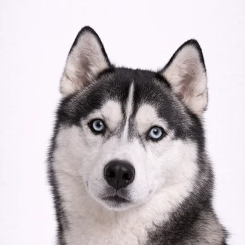
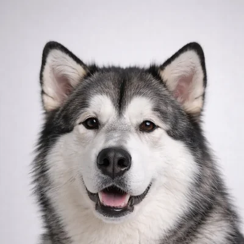

Husky Siberiano vs Malamute de Alaska
Dos magníficas razas árticas que parecen similares pero son sorprendentemente diferentes en tamaño, temperamento y propósito.

Husky Siberiano
Belleza de ojos azules
El Husky Siberiano es de tamaño mediano, rápido y resistente. Fueron criados para tirar cargas ligeras a largas distancias en frío extremo. Amigables y sociales, pero independientes.
Ver perfil completo →
Malamute de Alaska
Potencia ártica
El Malamute de Alaska es grande, poderoso y construido para tirar cargas pesadas. Son amigables y juguetones, pero requieren un dueño experimentado que entienda la dinámica de manada.
Ver perfil completo →Comparación lado a lado
| Atributo | Husky | Malamute |
|---|---|---|
| 📏 Tamaño | Mediano 51-60 cm, 16-27 kg |
Grande 58-64 cm, 34-45 kg |
| ⏳ Esperanza de vida | 12-14 años | 10-14 años |
| ⚡ Energía | ●●●●● Muy alta |
●●●●○ Alta |
| 🐕 Muda | Muy alta | Muy alta |
| 🎓 Adiestrabilidad | ●●○○○ Difícil |
●●●○○ Moderado |
| 🗣️ Vocalización | ●●●●● ¡Aullidos! |
●●●○○ Moderado |
| 💪 Fuerza | Resistencia > Fuerza | Fuerza > Resistencia |
| 👁️ Color de ojos | Azul, marrón, heterocromía | Marrón (siempre) |
| 🌍 Origen | Siberia, Rusia | Alaska, EE.UU. |
🔍 Diferencias clave
Husky: Velocidad y resistencia — tirar cargas ligeras a largas distancias rápidamente.
Malamute: Fuerza — tirar cargas pesadas más lentamente pero con seguridad.
Husky: Juguetón, social, "payaso", le encanta aullar.
Malamute: Más digno, más leal, instinto de líder más fuerte.
🎯 ¿Cuál es mejor para ti?
Elige un Husky si...
- ✓Quieres un perro de tamaño mediano más manejable
- ✓Te encantan los ojos azules
- ✓No te importan los aullidos constantes
- ✓Quieres una personalidad muy juguetona
- ✓Corres o andas en bicicleta mucho
Elige un Malamute si...
- ✓Quieres un perro grande e imponente
- ✓Aprecias un temperamento más calmado y digno
- ✓Tienes experiencia con razas grandes
- ✓Quieres un perro más leal y centrado en la familia
- ✓Menos vocalización es un plus
❄️ Desafío común
Ambas razas requieren MUCHO ejercicio, escapan si pueden, y mudan pelo MASIVAMENTE. ¡No adquieras ninguna si no estás preparado para un estilo de vida activo!